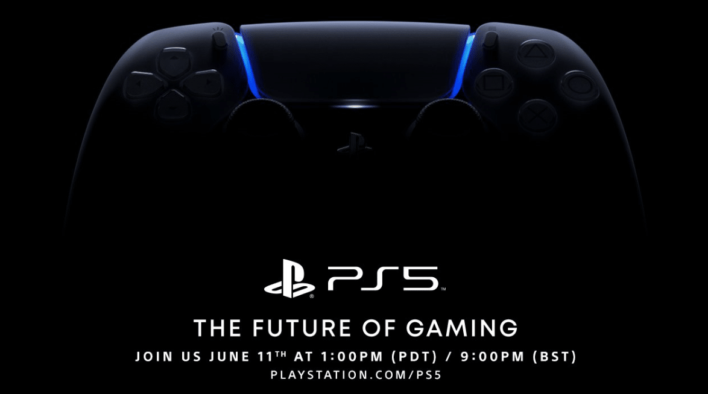

The Playstation 5 event just ended and I am in awe.
Not only because Sony’s Playstation has a one of a kind
taste in cinematics and visuals making it gaming’s equivalent of
Apple’s aesthetic. Sony managed to make this online event feel like
I actually left my home to attend something. Something I didn’t do
regardless of the current quarantine.
There’s not much for me to write about as the information I have all
comes from the live event, but I can just spend a few minutes saying
what I’m excited for, in the coming months.
First, I’d like to express my complete gratitude for the people that
sit down and make these video games that many of us enjoy. From the lead
developer to the assistant of the assistant of making coffee.
(I don’t know the industry.) In addition to that, a big thank you to
anyone who’s had a hand in developing new software that continues to
push the boundaries in gaming. With the demonstration of Unreal Engine 5’s
capabilities back in May; we’re in for a treat, visually, in the days to come.
That, coupled with the fact that we’re seeing more and more cross-platform
gameplay it’s hard not to be excited. Casual, avid, and professional gamers
alike will have a slice of pie to enjoy at the dinner party that is next
gen gaming.
Now, there were plenty of games that were announced, and displayed, that
are worth looking forward to. Below are the few that I squealed or jumped
at when I saw them displayed on screen.
Starting with:
SPIDER-MAN: MILES MORALES
Anyone that knows me, knows I love Spider-Man; be it comics, movies,
video games (shout out to Spider-Man on the PS1), I even own a onesie
with the webhead’s design (reference the “About” photo to the right for a
glimpse of it.) With that said, I admit, I’m a little less familiar with
Miles Morales’ Spider-Man, but that makes this more exciting. I’m looking
forward to whatever this game will throw at me. The graphics, the music,
the action, the representation!
COMING LATE 2020
Horizon Forbidden West
I heard Aloy’s voice, and all I could do was lift my hands in the air.
I have yet to actually finish Horizon Zero Dawn, but that doesn’t make
this any less thrilling. I will play RPGs even if they actively tried to
kill me, and in the world of Horizon everything is trying to kill you.
So that’s nice, I think. The game will have Aloy travel into the
Forbidden West beyond the Sacred Lands where she’ll meet new challenges
and foes, and new cute machines! THERE ARE GIANT MECHANICAL TORTOISES.
COMING 2021
DEATHLOOP
From Bethesda and Arkane Lyon comes Deathloop; a game where you’re being
hunted and everytime you die you restart the loop and do it all over again.
Think Tom Cruise in Edge of Tomorrow (or was it Live. Die. Repeat?)
The game play thus far is very reminiscent of one of their previous titles:
Dishonored. Except where Dishonored sometimes relied, or encouraged, you to
sneak by, Deathloop seems to throw stealth out the window. Making this a
run and gun I’m probably going to enjoy.
PRAGMATA
I really don’t know what to say about this one. It just looked interesting,
so I’ll definitely be looking into it further. However, from what I could
gather, you seem to play a character in some sort of space suit walking
around in an abandoned New York City (why is it always New York?) scanning
for clues. Then you meet a little girl that comes out of nowhere, and
suddenly BAM! A satellite crashes through the sky that was actually a
network of screens displaying a sky. suddenly on the moon
looking at Earth. That’s the entire trailer. I have no idea what’s
happening, but that’s why I want to play it.
Coming 2022
Little Devil Inside
Lastly, there’s Little Devil Inside which seems to be another RPG with
cute artwork, and some comedic aspect to it. It had a successful
Kickstarter campaign and I can see why. Although I’m not sure what the
gameplay will be like, it looks like a fun adventure.
Oh yeah, they also revealed the PS5! Remember what I said about the
aesthetic? Well it shines here. It’s a bold design, but it works.
Look at it! They also designed their accessories to match and it makes me
feel tingly. I want all of it.
Did the PS5 live up to your expectations?
What games are you looking forward to?
I’d love to know your thoughts!
Thanks for reading!
